Screenshots
Screenshots
Here is the main window of BasKet Note Pads, showing the hierarchy of baskets, and a complete basket. Notes are positionned freely, you can put formatted texts, images, links, files, colors, application launchers... Some notes have tags assigned to them: To Do, Important, Idea, Highlight:
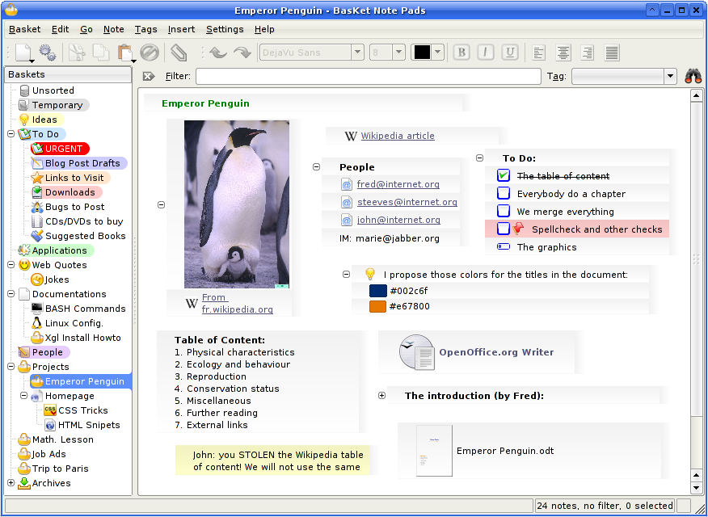
You can use BasKet Note Pads as a part of Kontact. This is convenient to have all your data in one window. Here is a list of link notes, in two groups:
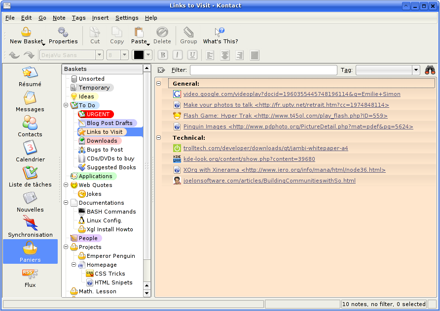
The dialog to create a new basket. You can choose between pre-defined templates and set all important properties at a glance:
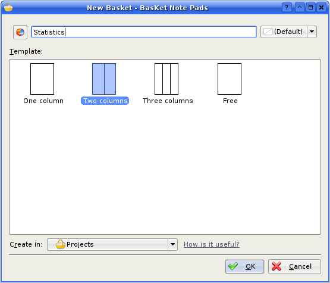
The dialog showing and letting to change the basket properties: background image, color, layout, and keyboard shortcut, to be able to display some baskets very quickly with simple key presses:
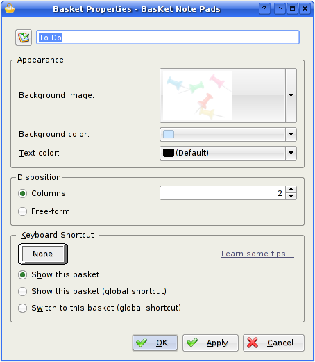
Choosing a background and text color for a basket is very simple. Most of the time, you only have to choose between the 13 top-most colors. No headhache trying to get a nice-looking color by tweaking hexadecimal values:
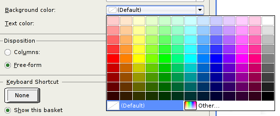
Choosing an icon is similarily simple. You have all the immense KDE icon choice:
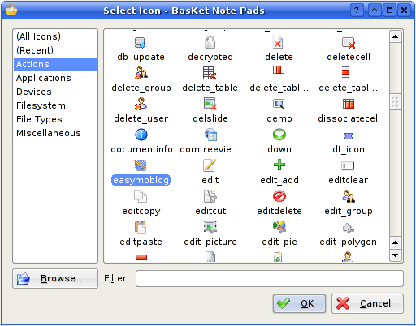
You can protect some baskets with a password or a public/private key. This dialog let you do so, and let you remove the passwords you assigned:
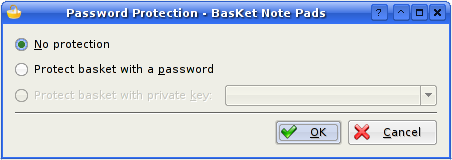
You can save a set of baskets into one basket-archive file and send the archive by email to a co-worker for him to be able to open and modify the baskets. Here is a basket archive as seen in Konqueror, it features a file thumbnail:
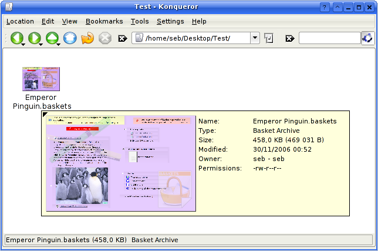
You can easily backup and restore all your data, so that you can safely trust BasKet Note Pads to store your important data. You also can change the location where your baskets are saved for, eg., save them in a network share to use your notepads across different computers:
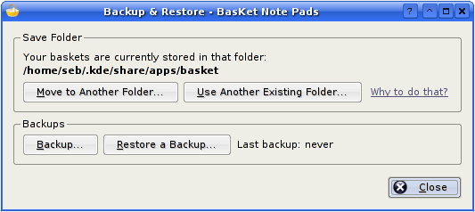
You can find a note you're searching for by simply typing a word or two in the top-most box. You can also filter notes to shown only those that have a certain tag assigned to them. Finally, the top-right icon lets you filter every baskets. Results are shown in blue in the basket hierarchy. The "(0+)Lock" icon informs you a basket is currently locked and haven't been searched:
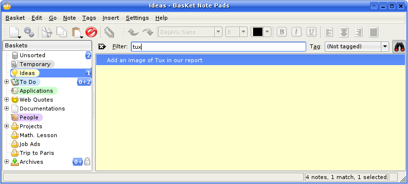
When opening a locked basket, you get this message, letting you enter your password to unlock it:
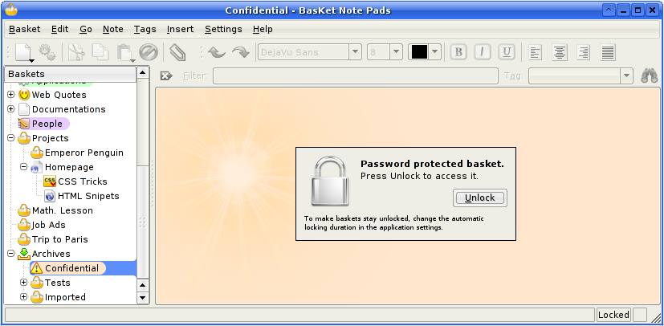
Here is the Tags menu. Simply check or uncheck tags to assign/remove them from the selected notes:
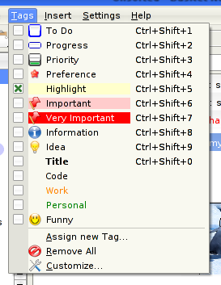
Tags are, of course, customizables. You can change them or create a totally new set of tags that mache your needs:
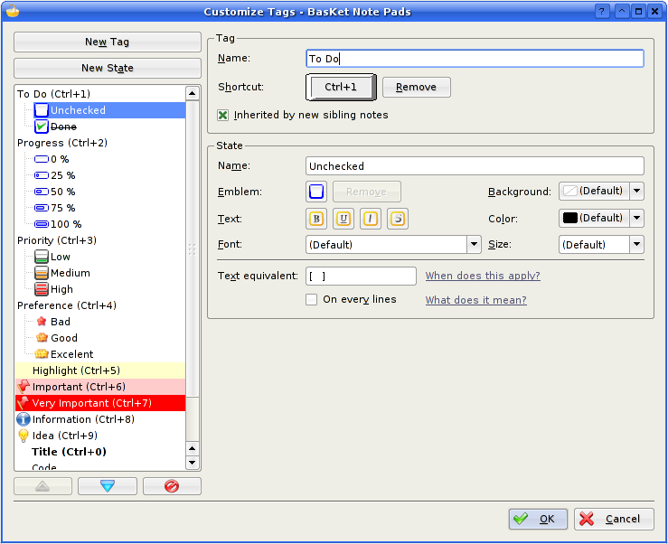
The "Make space on hard-drive..." note is currently edited: you have a full choice of formatting to make your important ideas to stand out:
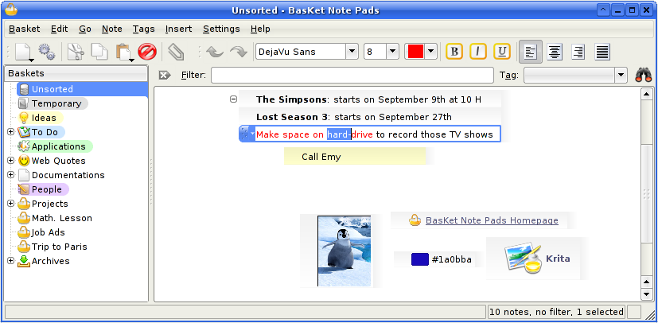
Here is the dialog letting you to edit a link note. Title can automatically follow the URL, and icon can be automatically assignated to the one provided by the website:
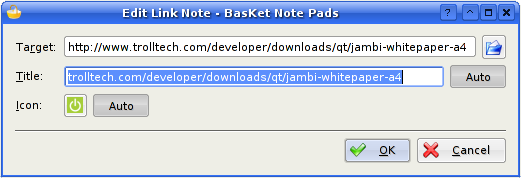
Editing an application launcher fire the following dialog. You enter the command and a title. The icon can be automatically guessed:
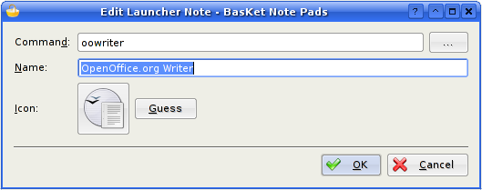
You can import an application launcher from the KDE menu, to be able to launch your favorite applications easily and quickly:
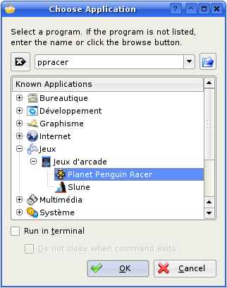
You can import any KDE icon into your baskets to make them look nicer. Once the icon you want to import has been choosen in a dialog similar to the one above, you can choose the size of the icon to import with only one click, by previewing the result:
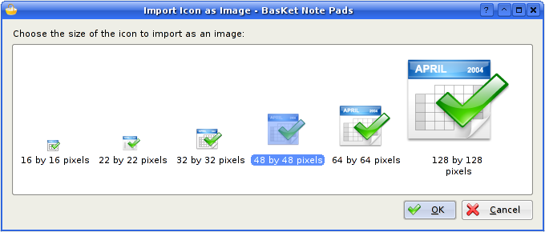
To quickly start with BasKet Note Pads, you can import your existing notes from a lot of other applications:
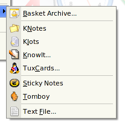
Most users were previously using only plain text files to take notes. To make the transition to BasKet Note Pads painless, you can import those files. No matter how you organized your text files, you can easily and quickly import them as several notes well-separated notes:
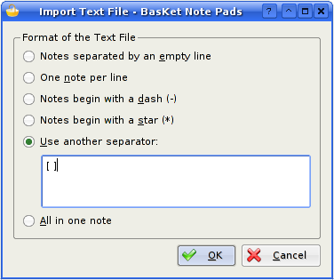
The Settings dialog first page: General:
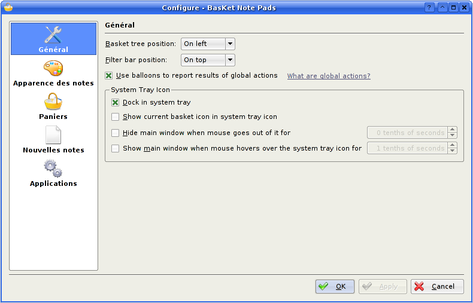
The Settings dialog second page: Notes Look:
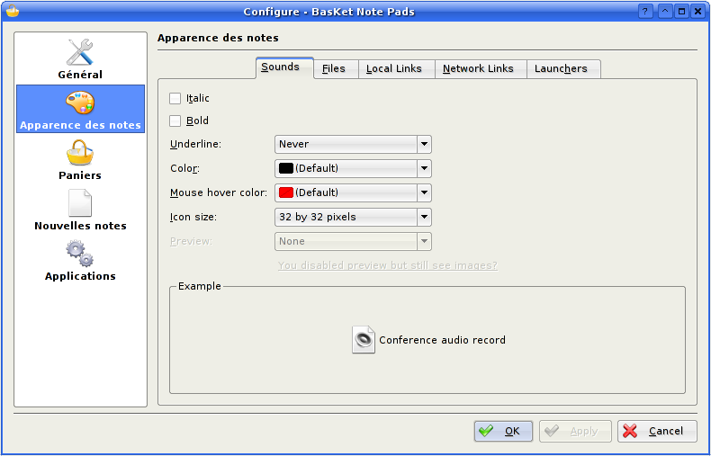
The Settings dialog third page: Baskets:
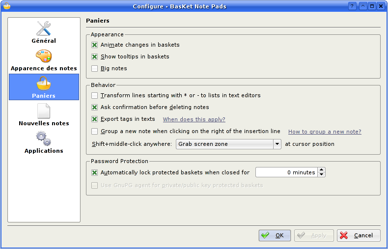
The Settings dialog fourth page: New Notes:
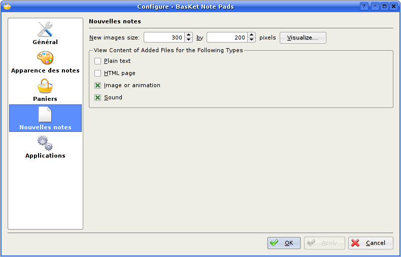
The Settings dialog fifth page: Applications:
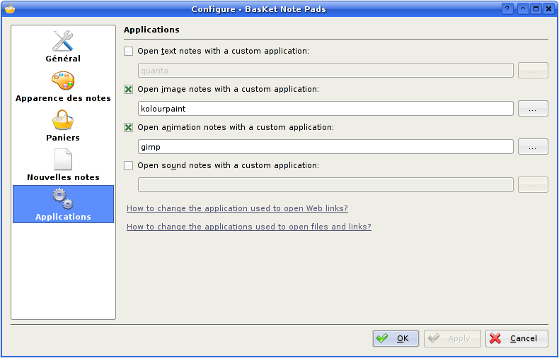
The About BasKet Note Pads dialog:
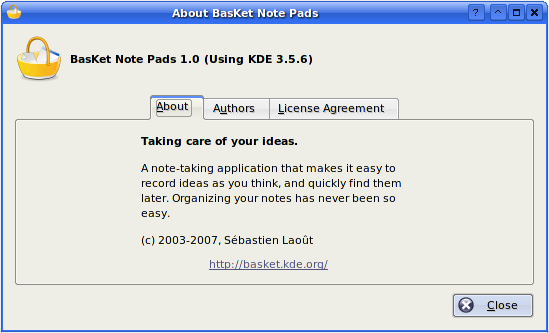